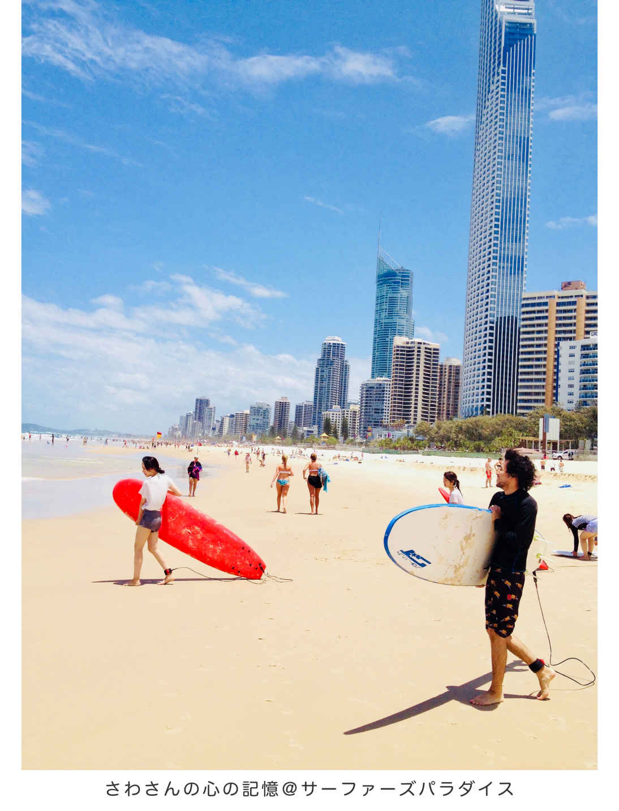

| Nomad Surfer［vol.1旅編］ノマドサーファーインタビュー書き起こし: その旅いつまで？飽きるまで。特別付録『無料ハワイ往復レポート』 | |
| 原元気 | |
| (2018) | |
はじめに
職業旅人 さわゆうすけ
心の記憶@サーファーズパラダイス
ヘイ！グダイマイト！（オーストラリア訛りの挨拶）
私と元気さんは、オーストラリアの東部、ゴールドコーストのサーファーズパラダイスという街で出会った。
私が初めて、オーストラリアに入国したのが、ゴールドコースト空港。そしてそのままサーファーズパラダイスに、バスで移動した。
非常に思い出深いサーファーズパラダイスの出来事が、『心の記憶』として、私の中で色褪せず鮮明に保存されて続けている。
...この時期、南半球のオーストラリアは夏が終わり、秋に突入していた。
秋と言っても、日中の日差しはとても強く、晴れた日には、気温もガッツリ上がることがある。逆に日が沈むと一気に肌寒くなるのが、オーストラリアの気候の特徴である。
街ですれ違うオージー（オーストラリア人）は、ビーチ沿いの歩道、スーパーマーケットの店内でさえ、平気で裸足で歩く。
日本で生まれ育った私には、最初はなかなか理解しにくい、そんなオージーの行動・光景をよく目撃していたが、その異文化さえも時間の経過と共に普通になっていく、グローバル感覚は不思議である。
横断歩道が青になった時に流れ続ける、あの独特な効果音・・・
私は度々、オーストラリアに遊びに行くが、『あの効果音』を聞くことで、当時のサーファーズパラダイスの『心の記憶』が鮮明に蘇る。
...２０１２年４月吉日。
共通の友人ウミくんの家で開催された『引越し記念ＢＢＱパーティ』に20 人くらい集まった。
その招待された大勢の中に、私と元気さんがいたのだ。
そこで我々は初顔合わせをすることになり、Facebookで繋がったのがこの物語の始まりである。
オーストラリアの『心の記憶は？』と自問自答するとしたら、もっとも意味があった出会いの一つに、このＢＢＱパーティのことを思い出す。
その時はもちろん、この書籍が発行されることなんて、我々は想像もしていなかった。
...あれから、この書籍がリリースされるまでの、約６年間。
我々はそれぞれ学び、出会い、物語があって、現在も成長しながら、友人として仲良くしている。
いつも明るく、何にでも好奇心旺盛にチャレンジする姿勢、仲間を大事にする気遣い。
私はそんな男気溢れるノマドサーファー元気さんを、この書籍を通して世の中に推薦したい。
サーファーズパラダイスのように、ピースフルな雰囲気に溢れている、我々の対談。
そして、『心の記憶』の中の一部をぜひ読み進めてみてほしい。
そして、この書籍を読み終えたあとは、我々の聖地、サーファーズパラダイスを、ぜひ訪れてみてもらえると嬉しい。
そんな素直な想いを最初にあなたにお伝えして・・・
レッツ・テイクオフ！

インタビュー前トーク
さわ あー、元気さん、どーもどーも！
元気 さわさん、おつかれさまです！
さわ また我々、品川プリンスホテルに戻ってきましたね！
元気 はい、また品プリです（笑）
さわ 私が元気さんにインタビューしてもらってから、ちょうど３ヶ月ですかね？
元気 あれ、もう３ヶ月前なんですね！早いな～
さわ 私、品プリの雰囲気好きなんですよ！
元気 僕も好きです。なんかオーラありますよね～
さわ 厳密にはここって品川区ではなく、港区みたいですね！確か東京では、一番年収が高い区らしくて、８００万とか９００万とかあるみたいです・・・平均年収がですよ！
元気 へーーー！そこに、今身を置いちゃってるわけですね！
さわ こういう空間にいるってことは、セルフイメージ上がるって可能性もあります。
元気
その感覚、大事ですよね。
僕も最近は、極力グリーン車に乗るようにしてます！20
分以上の移動はグリーン車。
さわ いいですねー、意識高い系じゃないですか（笑）
元気 意識だけは高く（笑）新幹線のグリーン車とか特に好きです！
さわ 快適ですよねー！
元気 正直、満員電車で10 分間揉みくちゃにされるだけで、エネルギー全部持っていかれちゃうんで！
さわ
持っていかれますよね～。
同じ時間を過ごしてても、この世の中って空間が分かれてるな～って思います。
元気
どこに身を置くかも、自己管理だったりしますよね、僕らフリーランスにとって。
いつもご機嫌でいる工夫が必要！
さわ
今日って月曜日の朝ですよね。
以前の私なら「眠てーな～」とか思いながら、嫌々出勤してた時間帯ですけど、我々は今こうして朝から無駄にテンション高くて（笑）
元気 本当ですよ、楽しみにしてきました！
さわ
っていう感じで、そろそろインタビューいきますか？
ちなみにこの質問って、どうやって集めたんですか？
元気 あっそうそう！これは、僕がオンラインで運営している、ノマドサーフィン・スクールに参加してくれている仲間が送ってくれました！
さわ そうだったんですか～、皆さん協力的ですね！
元気 はい、「スクールに参加する前、ノマドサーファーに対して、どんな疑問がありましたか？」っていうテーマで、全部で１７０個ぐらい集まりました。
さわ そんなに集まったんですね、素晴らしい！
元気 その質問の中から『旅ジャンル』を、今回シリーズ一発目にしようと思いまして。
さわ なるほど～、旅編ですね！
元気 はい、旅といえば、さわさんということで、今回お願いしたいなと思ったわけです！
さわ オッケーでございます！
Ｑ１．旅に持っていく必須アイテムは何ですか？
さわ
じゃあまず１番目の質問。
旅に持っていく、必須アイテムは何ですか？今思ったことパコッと教えて下さい！
元気 はい、僕もさわさん同様、家もモノも全部断捨離して、バックパック一個で旅をしてるので、あのバックが家みたいなもんなんですよね（笑）
さわ 実際そうですよね。
元気 だから要は、あのバックの中身は、全部必須アイテムだと思ってます。
さわ なるほど！ざっくりと、どんな感じの中身なんですか？
元気 まず、僕のバックパックはジッパー式で、小バックと大バックに分かれるんですけど、それぞれ中身をジャンルごとに分けてますね！
さわ ではまず、小バックには何が入ってるんですか？
元気 常に使うものですね！パスポート、国際免許証、MacBook、ＰＣ周辺機器とか。サプリメント、洗面系ポーチ、折り畳み傘とか！？あー、あとサングラスと眼鏡、もう毎日使うものです！
さわ なるほど、それをいつも持ち歩いているわけですね？
元気
そうですね、ホテルから外出するときは、基本これを背負って出かけます！
あと飛行機も大バックは棚の上、小バックは足元に置くって感じで使い分けてますね！
さわ 大バックの方はいかがですか？
元気
大バックは、基本衣類系です！
あとは、毎日〝使わない〟洗面系ポーチ、GoProとかドローンとかのガジェット類、サーフィン関係のグッズとかですかね！？
さわ 総重量は何キロぐらいですか？
元気 今ちょうど10 キロちょい！？ですかね。
さわ 軽いですね！
元気
家無しにしては、軽い方だと思います（笑）
実家にすら荷物をほとんど置いていないので、僕の人生総荷物は、全部で10
キロちょい！
さわ 断捨離してますね～
元気 このバック盗難にあったら、それこそ裸一貫ですよ（笑）
（※この対談後の５月、スペインで盗難にあいました。笑）
さわ 最高じゃないですか！（笑）
元気 最近はサーフボードも手放したので、基本的には、スーツケースをコロコロして移動してます。あっ、僕のバックパック、スーツケースにも変身するので！
さわ とうとうなくしましたね！サーフボードも！
元気 今年の１月に行った沖縄サーフトリップを最後に、手放しましたねー（笑）
さわ 結構デカいボードでしたよね？
元気 実はあれでも、サーフボードの種類でいくと、かなり小さめだったんですよ～
さわ ショートボードってやつですか！？
元気 はい、ショートボードの中でも超軽量のモデルでした！
さわ そうだったんですね！それでも負担だったと？
元気 はい、ずーっと旅移動してると、だんだんとストレスになってきて（笑）
さわ 私が最後に見たのが、ドイツのベルリンでしたね！
元気 そうでしたね（笑）フランスサーフトリップから、ドイツで現地集合して。
さわ 海のないベルリンに（笑）
元気 ドイツ人の二人に一人は振り向いてました。それスノーボードじゃないよね？っていう感じで（笑）
さわ
はは（笑）
必須アイテムに関して、何か話し足りないことありますか？
元気 うーん、パッと出てこないですね（笑）
さわ パスポート無くしたこととかはないんですか？
元気 ありますね～オーストラリアで。日本大使館に呼ばれて怒られましたよ。
さわ あるんですね（笑）どんな感じで怒られるんですか？
元気 別室みたいなところに呼ばれて、真顔で「ちゃんと管理してください！」って（笑）
さわ ウケますね、そのネタ（笑）
元気 無くしたっていうか、オーストラリアで車上荒らしに遭ったんですけどね！
さわ 海外はいつもハプニングだらけですからね～
元気 荷物に関しては、そんな感じじゃないでしょうか！
さわ オッケーです。ありがとうございました！
Ｑ２．旅に出ていない時は、何をしていますか？
さわ
じゃあ２番目の質問、旅に出ていない時は、何をしていますか？
日本にいる時の滞在スタイル、ということですかね。
元気 基本、日本にいる時も家は無いので、常に旅している感覚なんですけどね（笑）
さわ そうですよね、日本では大体どの辺にいるんですか？
元気 最近は、東京にいることが多いですかね！
さわ 元気さん、東京好きですよね！？
元気
何かと便利ですよね、仲間とも会いやすいし！
あと、旅から戻って、南の島と都会のギャップを感じるのが好きなんです（笑）
さわ 東京ではいつも何してるんですか？
元気
仕事することが多いですね、ホテルとかカフェで。
あとは、今さわさんのリアル勉強会にも参加してるので、最近は、そのタイミングで日本に帰国している感じです！
さわ なるほど！東京では、他にどんなことをしてますか？
元気 健康管理にハマってますかね（笑）
さわ 体のメンテナンスですか？
元気
はい、健康は今一番意識しているかもです。
栄養分析検査を受けたり、がん検診へ行ったり、予防専門の歯医者に通ったり。
さわ 健康志向になりましたねー
元気 あと健康とは違いますけど、ホワイトニングを受けたり（笑）
さわ 歯にこだわり始めましたか？（笑）
元気 はい！歯が白いと自然とスマイルになる、というキャチフレーズに惹かれました（笑）
さわ いいですねー！２回やったんでしたかね？
元気 昨日で３回目ですね！
さわ 肌が焼けている分、歯の白さが目立ちますよね～
元気 ホワイトニングの先生にも「肌はドンドン黒くなって、歯はドンドン白くなってますね！」って言われました（笑）
さわ 逆にインパクトありますよね！
元気 松崎しげるさんみたいですか（笑）
さわ
あの方も歯白いですよね～（笑）
歯の他には何にハマってますか？
元気 あとは、姿勢ですかね！僕もさわさん同様Ｏ脚なんですが、それを改善しに、今カイロプラティックへ通ってます。
さわ 経過はいかがですか？
元気 Ｏ脚の前に、まず姿勢改善が先だと言われ、電車に乗ってる時も、食事の時も、パソコンをする時も、姿勢を意識してます。そのお陰か、腰痛はほとんどなくなりましたね！
さわ 疲れにくい体になる、っていうのは大事ですよね！旅人って移動が多いので、何気に重労働だと思ってます。
元気 そうですよね、特に僕の場合、旅もサーフィンもパソコン仕事も、全部腰痛になりやすいので、注意してます！
さわ 日本にいる時は、勉強会へ参加したり、健康メンテナンスをして、好きな時に海外へサーフトリップへ行ってる感じですかね？
元気 今はそんな感じです！
さわ 明後日からはどこに行くんでしたっけ？
元気 インドネシアのバリ島に飛びます！
さわ もちろんサーフトリップ？
元気 はい、去年も行ったんですけど、バリ島って乾季と雨季があって、去年の２月はまだ雨季だったんです。
さわ なるほど！乾季になると波が良いんですか？
元気
バリ島は時期によって、風向きが変わるんですよね！
雨季は島の東側が波が良くて、乾季に変わると、さわさんも好きなクタビーチとか、西側の波が良くなります！
さわ そうなんですね！私は初心者ですが、クタビーチの波は、乗りやすくてお気に入りです！
元気
いいですよね～クタビーチ！
なので今年は、西側の波を求めて、バリ島に行っちゃおうかと思ってます！
さわ あと何か話したいことはありますか？旅のスタイルについて。
元気 うーん、また追々出てくるんじゃないですかね（笑）
Ｑ３．旅先を決める基準は何ですか？
さわ じゃあ３番目いきましょう！旅先を決める基準は何かありますか？
元気
僕の場合、旅先を決める基準は二つあって、一つはさわさんと同じだと思うんですが、行ったことがないところ！
もう一つは、やっぱり波があるところですね！
さわ やっぱり波があるところっていうのが、ベースになるんですね？
元気
そうですね～、サーフィンベース！
他にも細かい基準は色々ありますけど、行ったことがなくて、波があるところが、まだまだ世界には沢山あるので！
さわ 逆に波がないところには、行かないんですか？
元気
一緒に行く相手によりますね！
タイのリペ島とか、さわさん達と行ったドイツとか、相手がサーファーじゃなければ、波がない場所も旅します！
さわ リペ島最高ですよね～、タイ最後の秘境！
元気
高城剛さんの『人生を変える南の島々』を読んで、ずっと行ってみたかった島です。
南の島で、のんびりも最高なんですけど、一人旅とか、サーファー仲間と行くなら、やっぱり波は欠かせないですね！
さわ それほどサーフィンが好きなわけですね？
元気
サーフィンは、ずっとハマってますね～
他のメジャースポーツと違って、ロケーションが変わるだけで、全然楽しみ方が変わると思うし、旅との相性は抜群ですよね！
さわ 『サーフトリップ』って言葉があるくらいですもんね！
元気 本当そうですね、旅の目的がサーフィンなので、とてもシンプルです。
さわ あと、何かありますか？旅先を決める基準？
元気 あー、あとは、また会いたい人に会いに行くっていう旅もあるかもです！
さわ いいですねー、例えばどんな旅があったんですか？
元気 一昨年、南台湾へサーフトリップに行ったんですけど、そこで仲良くなった『香港人サーファーカップル』がいて。
さわ 香港でもサーフィン出来るんですね！？
元気
そうなんですよ、僕もそれまで知らなくて！
それで、去年彼らに会いに香港へ行って、一緒にサーフィンしましたよ！
小籠包までご馳走になって、最高でした！
さわ
そういうのも旅の楽しみのひとつですよねー！
あとは、どうですか？
元気 あとは、旅仲間の誘いには、必ず乗るっていうマイルールとか！？（笑）
さわ 例えば、私の誘いとか？（笑）
元気 そうですね（笑）もっと言うと、自分より自由に旅している人の誘いですかね！
さわ 今年６月の、ロシアサッカーワールドカップも、ノリ良くお返事頂けて嬉しかったですよ！
元気
楽しみですねー！
ぶっちゃけ、それなりにお金がかかると思うんですけど、僕より自由に旅している、さわさんと旅する時間の方が、僕にとっては、価値が高いと思っているので！
さわ ありがとうございます！一緒に旅すると、色んな気付きや学びがありますよね！
元気 はい、個人的には、１００回のビジネスコンサルよりも、１回の旅だと思ってます（笑）
さわ 素晴らしい！そんな感じでここまでＯＫですか？
元気 はい、ありがとうございます！
Ｑ４．住所不定って、住民票はどうしてるんですか？
さわ
４番目、住所不定って、住民票はどうしてるんですか？
ちなみに、いつまで住所不定を続けるんですか？という、質問が来てますね。
元気 まず住民票は、去年の２０１７年の１月に引っこ抜きました！
さわ 引っこ抜いて、今はどういう状態ですか？
元気 引っこ抜いたので、今は『日本非居住者』ですね、日本人だけど日本に住所がないっていう状態です！
さわ 住民票がなくて、何か不便なことはありますか？
元気 定番ですけど、日本で保険がないこと。
さわ 我々にとっては、定番ですね（笑）
元気 海外ではクレジットカードの自動付帯保険があるので、ある意味安心なんですが、日本の方が慎重になりますね（笑）
さわ なるほど、他は何かありますか？不便なこと？
元気 他は、パッと思い付かないですね！
さわ 保険以外は、良いことしかないっていう感じですか？
元気
家賃も、電気代も、ガス、水道、インターネット、全てがホテル代に変わるわけで、シンプルですよね！
部屋を掃除する必要もありません（笑）
さわ 気楽ですよね（笑）
元気 保険がないという、一見マイナスなことも、プラスで考えたら、病気や怪我ができないので、自分の身体のことを大事にできています。
さわ 旅人は体が資本ですからね。
元気 とか言って、去年はサーフィン中に２回ウニ踏みましたけど（笑）
さわ ウニ踏んで、５万円とかかかったんでしたっけ？
元気
１回目のウニはスリランカで、地元のサーファー青年にトゲを抜いてもらったんですが（笑）
２回目のウニは地元長崎で踏んで、そのまま病院に行ったら、５万円くらい取られましたね！
さわ ウニのトゲを抜くだけで？
元気 そうですねー、10 割負担なので（笑）
さわ 色んな意味で、痛てーすね。
元気 痛てーす（笑）保険を通さないので、病院によっては、もう『言い値』なんでしょうかね。
さわ 無保険というリスクを実感したわけですね。
元気 何にでも、リスクは伴いますからね（笑）
さわ
本当そうですよね、何を捨てて何を取るかっていうね！
この質問の中では最後なんですけど、住所不定の旅をいつまで続けるんでしょうか？
元気 基本、僕がモノゴトを辞めるタイミングっていうのは・・・『飽きるまで』と決めてます（笑）ようは直感。
さわ この質問、私もよく聞かれるんですよー、その旅いつまで続けるんですか？って。
元気 めちゃ聞かれてそう（笑）
さわ
「いや、分かんないです。」ってなります。
「じゃあ、いつまで会社員続けるんですか？」って聞くと、ほとんどの人が分からないと思うんですよ。
元気
確かにですね（笑）
今は住所不定に旅するのが楽しいので、すぐに辞めることはないと思いますけど。
さわ ただ元気さんは、基本オンラインで仕事をしているから、ずっと旅を続けられているって現状もありますかね？
元気 それはありますよね。もっというと、ずっと旅がしたかったから、オンラインで仕事するようになったって感じです。
さわ
なるほど。
結婚したり、子供ができても住所不定を続けるんですか？
元気 はい、それもよく聞かれるんですけど、それはその時考えますし、それも踏まえて新しいチャレンジになると思いますね！
さわ
多くの旅人が、１年間とか期限を決めちゃうわけですからね。
貯金してそれを切り崩しながら旅をする。
元気 確かに『貯金が尽きる＝旅が終わる』っていう旅人は多いでしょうね。
さわ
私も以前はそうでしたし（笑）
今は、旅の期限は決まってないわけですね？
元気 はい「もう飽きた！」と言えるまで旅がしたいです（笑）
さわ ありがとうございます！
Ｑ５．世界中で、どこのビールが一番美味かったですか？
さわ じゃあ５番目、世界中で、どこのビールが一番美味しかったですか？
元気 これ意外と聞かれるんですよね！
さわ 元気さんビールお好きですもんね？
元気 そうなんですよ。ビール好きのイメージもあるみたいで（笑）
さわ どこのビールが美味しかったですか？
元気 最近だとフィリピンのラ・ユニオン州へ行ってたんですけど、フィリピンといえば『サンミゲルビール』ですよね！
さわ サンミゲル！茶色の瓶に白っぽいラベルで。
元気 雰囲気ありますよね、１００年以上歴史があるビールって聞いてます！ただ正直、サンミゲルは、鉄分多めで僕はちょっと苦手かもって思いました。
さわ そうなんですね！
元気 なので、今回は『レッドホース』っていう別のビールを飲んでましたね！
さわ それもフィリピンビール？
元気 はい、フィリピンです。
さわ 元気さんフィリピン自体にも、ハマってますよね？
元気 そうですね、今回の旅でハマったかもです（笑）
さわ レッドホースは、どんな感じで美味しいって思ったんですか？
元気
言葉じゃ上手く説明できないです（笑）
基本的にバリ島で飲む『ビンタン』も、台湾で飲む『台湾ビール』も、南国で飲むその土地のビールは、美味しいですよね～
さわ 台湾のビールって何でしたっけ、『チンタオ』？
元気 チンタオは中国だと思うんですけど、台湾は台湾ビールって書いてますかね。
さわ 台湾の湾が難しい灣の字でね。
元気
そうそう！クラシックってやつの方が、僕は好きかもです。
あとこの間、さわさん達とドイツのサッカー観戦で飲んだ、『ドイツビール』も最高でしたね！ビールとホットドックは相性抜群です。
さわ 我々４人で、最初バーみたいなところに入って、ドイツビールだろって頼んだビールが、ベルギービールだったっていうね。
元気 あれ、笑えましたね（笑）あっでも一番ハマったビールは？って聞かれたら、オーストラリアのビールかもしれないです。
さわ おーー、オーストラリア！なんてビールですか？
元気 オーストラリアって、州ごとにビールがあるんですけど。
さわ へーそうなんですね！
元気 ニュー・サウス・ウェールズ州（ＮＳＷ州）の『トゥーイーズ・エクストラドライ』ってビールが好きでした！
さわ ＮＳＷ州って、ゴールドコーストとかですか？
元気 ゴールドコーストは、クイーンズランド州（ＱＬＤ州）ですね！ＱＬＤ州で有名なのは、黄色のラベルに赤色でＸＸＸＸって書いてある『フォーエックス・ゴールド』です。
さわ あーありますね～、あれフォーエックスって読むんですね？
元気
はい、Ｘが４つでフォーエックス。
トゥーイーズ・エクストラドライは、緑色のラベルに鹿マークのやつなんですけど。あれ当時よく飲んでましたね～
さわ それが一番？
元気 一番好きかもですね！
さわ この質問、結論が出るまで、なかなか時間かかりましたね（笑）
元気 はい、最後に結論出ました！（笑）
Ｑ６．旅先の宿は、いつも現地に着いてから探すのでしょうか？
さわ じゃあ６番目、旅先のホテルは、いつも現地に着いてから探すのでしょうか？それとも事前に予約をしているのでしょうか？
元気 ずっと旅していると、これもよく聞かれますよね！
さわ あとホテルの宿泊代は一泊大体いくらぐらいですか？一人でホテル暮らしって寂しくないんですか？っていう質問全部で四つですね！
元気 ホテル系のご質問ですね、ジャンル的には。
さわ 一個ずつ聞いていきましょう！まずホテルは、いつも現地に着いて探すんですか？
元気 現地に着いても探すんですが、最初の二泊だけは事前に取ってから移動しますね。
さわ 前日とかですか？
元気
そうですね、基本予約は一日前とかが多いですかね。
なので、明後日からのバリ島のホテルはまだ予約してないです（笑）
さわ なるほど！私もそんな感じですが（笑）
元気 旅先によっては、お気に入りのホテルがあるので、その場合は、予約が埋まる前に先に取ったりもします。
さわ 基本は、前日とかに二泊だけ取る感じですね？
元気
初めて泊まるホテルだとそうですね！
その理由は、やっぱり現地に着いて泊まってみないと分からない部分が沢山あるからです。
さわ 分からないですよね。
元気
最悪ハズレな場合でも、二泊なら何とか我慢できるという経験からそうしてます。
気に入れば連泊するし、ハズレなら違うホテルに移動です。
さわ インターネットぶっ壊れてるとか、虫がやたら出るとか、ありますからね～
元気
そうなんですよ！アジアだとお湯が出ないとか定番ですよね。
あと写真と結構違ったりするじゃないですか、予約サイトは（笑）
さわ
盛り盛りですよね、写真マジックあります！
どこの予約サイトを使ってるんですか？
元気
僕はいつも『エクスペディア』ですね！
レビュー３．５以上で探してます。ポイントも貯まりやすいし、アプリが使いやすくて気に入ってますね！
さわ なるほど、一泊大体いくらぐらいとか、規準はありますか？
元気
日本のホテルだと、大体一泊６～８千円ぐらいじゃないですかね。
アジア圏になると、もうちょっと安くて４～６千円前後とか、ヨーロッパとか行くと日本より高かったり。
規準はある程度、旅先によって変わってきますよね！
さわ
地域によって変わるということですね。
あとは、一人でホテル暮らしって寂しくないんですか？ということです。
元気さんが一人暮らしかどうか、私は知らないんですけど（笑）
元気
基本は一人旅なので、一人暮らしですよ（笑）寂しいという感情はあまりないですけどね・・・
いや、時々はありますよね！人間なので。
さわ だって人間だもの、ですね（笑）
元気 ただ、寂しいという感情に、あまりマイナスなイメージは持っていないかもです。
さわ というと？
元気 怒ったりする自分は、あまり好きではないので、そういう感情になった時は反省しますけど。
さわ 反省が入りますか（笑）
元気
反省というか切り替えます、イライラしても良いことないんで（笑）
寂しい時は、単純に「今寂しいんだな～」って思ってますよ。
さわ 素直に、そう思う時もありますよと。
元気 ありますよ、人間だもの（笑）
さわ そんな時は、寂しい気持ちをどうするんですか？受け入れるのか？もしくは誰かに満たしてもらうのか？
元気
単純に人と会ってますかね。
海外なら現地の出会いを楽しむし、日本なら、気が合う仲間や、友人とご飯に行ったり、サーフィンしたり。
さわ デートしたり？
元気 はい、デートもしますよ、独身だもの（笑）
Ｑ７．旅先に彼女は何人いますか？
さわ
デートという言葉が出たので、７番目。
旅先に彼女は何人いますか？って話なんですけど。
元気 旅先に？（笑）
さわ あとここから派生して、住所不定の旅先で一番セクシーだと思った女の子は、どこの国ですか？
元気 なるほど、なるほど、なるほどです。
さわ こんなの、聞いていいんですか？（笑）
元気 意外と、この質問もよく聞かれます。
さわ 元気さんがサーファーだから、そう見えるっていうフィルターもあるのかと（笑）
元気 チャラいイメージなんでしょうか（汗）
さわ サーファーの女の子はどうですか？
元気
サーファーの女の子は、可愛い子多いと思いますよ！
スノボの格好した女の子は、二割増しで可愛いとか、着物着てたら二割増しで可愛い、みたいなのってあるじゃないですか？
さわ ありますね～
元気 サーファーだと小麦色の肌と、セクシーな水着で四割増しって感じですかね、僕の中で（笑）
さわ なんか分かるかもです。
元気 最近はウエットスーツとかも、結構セクシーだったりして。街中で見かけても、気にならないような女の子が、めっちゃ可愛く見えたりしますよ、実際！
さわ なるほど～、一番セクシーな女性と出会った国って、どこか思い出せますか？
元気
南国は特に、どこの国へ行ってもセクシーな女の子で溢れてますからね（笑）
中国の海南島（ハイナン島）や、韓国の済州島（チェジュ島）に行った時も、セクシーなサーファー女子はたくさんいましたし！
さわ 北国では、あまりサーフィンってやらないですもんね？
元気 やってみたいんですけどね～、フランスなら去年やりましたけど！
さわ 例えばフィンランドとか、北欧でも出来るんですかね？（笑）
元気 氷河が崩れて起きた波で、サーフィンする映像なら見たことありますよ！
さわ 氷河！私見に行ったことあるんですよ！アルゼンチンの南の方で。
元気 おー、南極側の氷河ですか！
さわ 「ガシャン」って崩れたと思ったら、ものすごい波ができるんですよね、あれはマジでビビりました！
元気 えーーー、間近で見たんですか？
さわ 見ました！あれでサーフィンはヤバイですね（笑）
元気 そう、そういうのもあるし、寒いですが、イギリスとか、カナダでも、サーファーはいるみたいです。
さわ
そうなんですねー！
で、海外に彼女は何人いるのか？っていう（笑）
元気
あー、いないっす、いないっすよ（笑）
出会いはたくさんありますけどね。
さわ 出会うけど、付き合わないってことでいないんですか？
元気 世界中旅してたら、可愛い女性ってめちゃくちゃ出会うわけじゃないですか、正直。
さわ 旅人って出会い多いですよね、何気に。
元気
そういう時に堂々と、現地の言葉でコミュニケーション出来るようにはなりたいですよね。
それを乗り越えたら、ビジネスでも何でも上手くいきそうな気がしてて（笑）
さわ 質問の内容とかよりも、欲望や野望の話になってますけど、、、（笑）
元気 確かに（笑）結論、旅先に彼女はいないです。
さわ じゃあ、いないってことにしておきましょう！
Ｑ８．サーフボード持って、ずっと旅するの大変じゃなかったですか？
さわ じゃあ８番目、サーフボードを持って、ずっと旅するのは大変じゃなかったですか？っていう質問です。
元気 この答えはもう質問に書いてありまして、ようは大変だったから手放しました（笑）
さわ そういうことですね！
元気 ２０１７年１月に、家と荷物を全て断捨離して、７キロのバックと、サーフボードだけを持って旅をスタートしたんですが。
さわ 住所不定になって、もう１年以上経つんですね！
元気 当時は、軽量で丈夫なショートボードを、ニットケースに入れて運んでいたので、ボード自体は２キロぐらいだったんですけどね。
さわ そうだったんですね！ニットケースって布？（笑）
元気 はい、布のケースです。なるべく身軽になりたっかたので（笑）非常識だとは思うんですけど。
さわ それでボード壊れないんですか？
元気
移動で壊れることはなかったですね！
インドネシアとスリランカで、サーフィンしまくって、結局ボロボロになりましたけど。
さわ それでまた新しいボードを買い直したんですか？
元気 はい、それまでは『アベレージジョー』と言うボードを使ってたんですが、南の島（リーフポイント）向きでないと分かったので、ボードもケースも日本で買い直しました。
さわ そうなんですね！でも結局は、そのボードも最近手放したわけですね。
元気
そうですね、そのボードは一般的なショートボードだったんですが、だんだんと持ち運ぶのが、ストレスになってきまして。
ボードは、現地で借りれば良いかなって！
さわ それが結論ですね！大変だったからレンタル式になったと。
元気 はい、去年大雪の品川駅を歩きながら決意しました（笑）
さわ 大雪降りましたね～（笑）
元気 それにノマドサーファーが、サーフボード持ってないってある意味面白いと思ったので！
さわ 確かに、キャッチーでインパクトありますね！
元気 あっ、あと『ＤＪＩマビックエアー』っていう超軽量ドローンが発売されて、とうとう買う時がきたかと思ったときに、ドローンは現地で借りれないけど、サーフボードは借りれるなと思いました。
さわ じゃあ、ドローンを買うと決めたことが、ボードを手放す決め手にもなったわけですね～
元気 そうですね、最後に背中を押してくれたのはドローンかもしれません。
※この対談の２週間後、バリ島でドローン水没、紛失しました（笑）
Ｑ９．今一番行きたい海外の国、国内ならどこですか？
さわ ９番目、今一番行きたい海外の国、国内はどこですか？ってことで、まず海外から。
元気
これまで行ったことのない国だと、やっぱり『スペイン』！
スペインのサンセバスチャンに行ってみたいです！
さわ サンセバスチャンは、サーフィンもできますもんね！
元気
はい、ヨーロッパ随一のサーフィンビーチだと聞いてます！その代わり人も多いみたいですが。
あとは、スペイン語の短期留学とかも面白そうですし、美食の街というのもポイント高いです！
さわ スペイン料理美味しいですよ～！国内ならどうですか？
元気 国内だと、基本的にはやっぱり離島が好きですね！
さわ 国内の有名なサーフアイランドは、大体全部行った感じなんですか？
元気 例えば、東京の伊豆七島で言うと、新島、神津島、八丈島は行ったし、小笠原諸島も、一昨年さわさんと行きましたよね。
さわ はい、あの七つの島は全部行ったんですか？
元気
サーフィンが出来るとこだと、あと三宅島へ行ってないので行きたいですね！
沖縄方面の離島も、奄美大島、種子島、屋久島、宮古島、石垣島も行ったので・・・逆に北海道とか？（笑）
さわ
おー！北海道も意外とサーフィンできるんですよね！
広尾とかの方でしたっけ！？帯広方面。
元気
僕が聞いたのは、苫小牧の近くと、あと利尻島だったかな！？
ローカルサーファーもいるみたいですよ！サーファーのバイブル、坂口憲二のＤＶＤ『海から見たニッポン』で観ました！
さわ 利尻島の海は綺麗らしいですよ～。
元気 冬は寒いので、夏に行くのがいいんでしょうけど、あえて極寒の冬に行きたいな～と（笑）
さわ サーフィンとか関係なく？
元気
いえ、サーフィンで（笑）
なんか、そういうのも旅のモチベーションの一つで。単純に行きたい！ってところにももちろん行くし、ここ誰も行ってないだろ～とか、マニアックな場所を旅するのも好きなんですよね！
さわ 利尻島サーフィンは、あまり聞かないかもですね！
元気
はい、そんなとこでサーフィンできるの！？みたいな。
去年だと、香港や中国の海南島、韓国のチェジュ島にサーフトリップしました。
さわ チェジュ島でサーフィンって、あまり聞かないですよね～
元気
そうでなんです。
韓国は今サーフィンブームが到来してるみたいで、サーファーがたくさんいましたよ！
さわ チェジュ島は、韓国人が新婚旅行とかで行くとこですもんね。
元気 確かに、日本人は全然いなかったです。
さわ あとどこか行きたいとこありますか？
元気 いっぱいありますよ、モルディブも行きたいし、メンタワイとか、中南米も行きたいです！
さわ カリフォルニア在住の太郎先生（共通の友人）が「コスタリカの波は良い！」って言ってたの思い出しました。
元気
ハンティントンビーチ『ＡＯＫＩの中華』のオーナーの太郎さんですね！
彼の旅の話もぶっ飛んでて面白かったです、現地で、僕もずいぶんお世話になりました。
さわ ということで、この質問の結論は？
元気
海外なら、スペインのサンセバスチャン！
国内なら、北海道の利尻島！ですかね！（笑）
Ｑ10 ．元気さんが、一番好きな海はどこですか？
さわ
じゃあ10
番目、元気さんが、一番好きな海はどこですか？
逆にもう行きたくないと思う海はありますか？
元気 海系のご質問ですね！
さわ じゃあ、まず一番好きな海は？
元気 一番好きな海は、これ意外だと思うんですけど・・・『鎌倉』かもしれないですね！
さわ ほーーー、鎌倉の波が乗りやすいんですか？
元気 いえ、波というより『鎌倉の海』が好きなんだと思います。
さわ 雰囲気ってことですか？？？
元気 そうですね、鎌倉の雰囲気。それって結局、自分の背景というかストーリーと、めっちゃ重なるんですけどね！
さわ でもそれって大切なことじゃないですか？
元気 ですよね～鎌倉に１年半住んで・・・ようは僕の『鎌倉時代』ですよ。
さわ はい、鎌倉時代ですね（笑）
元気 あの時期は、一番ビジネスも頑張ってたし、同時に一番結果が出なかった時期でもあります。
さわ 頑張ってましたよねー
元気
当時付き合ってた彼女が、すごい支えてくれたこともあって、すごい感謝してるんですけどね。
そんな時期を鎌倉で過ごして・・・
さわ なんと！今日その彼女が来てます！
元気 いえ、来てないです（笑）
さわ 突然登場ーーー！みたいな（笑）
元気
鎌倉って基本あまり波は無いんですけど、海に沈む夕日がめっちゃ綺麗なんですよ！
鎌倉の夕日には、何度も癒されましたね～
さわ 良いですね～、そして髪が伸びたら『美容室ＵＲＵＭＡ』に行って？
元気
僕らの共通仲間、ウルマさんですね！
確かにウルマさんと出会った場所っていうのも、僕が鎌倉を好きな理由かもしれませんね！
さわ 鎌倉いいとこですよね～ご飯も美味しいし。
元気 鎌倉大好きです！未だに帰国したら足を運んじゃいます。
さわ ノマドサーファー元気さんが愛する海は、鎌倉で決定ですか？
元気 決定ですね～
さわ 逆にもう行きたくない海とかってあるんですか？あそこはもうシンドイよ、みたいな（笑）
元気 サーフィンって、ローカルサーファーっていう世界があるんですよね。
さわ ローカルサーファー！いますね～
元気
その土地を大事にしてきた、地元サーファー達のことです。
ローカルをリスペクトするのが、僕らビジター（旅行者）の礼儀なんですが、場所によっては、理不尽な怒られ方をすることもあって。
さわ ローカル特有のルールがあるんですか？
元気 ありますね、その土地土地によって。
さわ どう理不尽に怒られたりするんですか？
元気 笑顔で挨拶しても「お前、笑顔で挨拶すればいいってもんじゃねーんだぞ」と怒られたり（笑）
さわ
どうしたらいいんですかね（笑）
そういうことは、海外でもあるんですか？
元気 海外ローカルの方が、理不尽なサーファーが多いかもです（笑）
さわ そうなんですねー。
元気 そういう時は、自分のリスペクトが足りなかったんだなーと、反省するように心がけてますが、気分はまず上がりませんよね（笑）
さわ なかなか難しい課題ですね。
元気 ローカルが上、ビジターが下、基本的に上下関係ができていることも多くて、その雰囲気を強く感じる海は、正直シンドイし行きたくないですね（泣）
さわ その雰囲気を変えていきたい、みたいな？
元気 ローカルには、ローカルの苦労や信念があるでしょうから、旅行者とローカルのパイプ役みたいなことが、できたら嬉しいですね～。
さわ いいですね！旅してる元気さんだからこそ実現するチャンスはありそうですね！
元気 ローカルとビジターのお互いが心からリスペクトし合って、気持ちよくサーフィンできる海がもっと増えたら最高だと思います！
さわ では、他に好きな海はありますか？ビジターとして行ってよかったな～みたいな。
元気 そうですね、海の話になるのか、波の話になるのかで、またちょっと変わってくるんですけど。
さわ じゃあ、今度はサーフィンベースでいきましょうか？
元気 ぱっと思い付いた場所でいうと、定番ですがインドネシアですかね！
さわ インドネシアの、どこですか？
元気
去年一番、度肝を抜かれた波は『スンバワ島』！
そこにある『レイキーピーク』っていうサーフポイント。
さわ GoProで映像撮ってましたね！
元気 はい、あれはさすがに衝撃的でした！こんな波が世界には存在するんだなと。
さわ そうなんですね～
元気 波とロケーションは１００点、アクセスと食事は30 点くらいです（笑）
さわ 良いことばっかりではないと（笑）
元気 好きな旅先って、波の良さ、アクセス、食事、ローカルの人柄、とか色々絡んでくるので、一概には言えないんですけど、波というテーマで答えると、スンバワ島は素晴らしかったです！
さわ なるほど～ありがとうございます！とまあ、そんな感じですかね？
元気 はい！ありがとうございます！

Ｑ11 ．住所不定になる前は、どんなライフスタイルだったんですか？
さわ
続きまして11
番目、住所不定になる前は、どんなライフスタイルだったんですか？
おそらく、鎌倉に住んでた時の話になりますかね？
元気
そうですね！鎌倉時代は、本当にビジネスを試行錯誤してた時期で、お金は全然無かったんですけど、無理矢理でも旅は続けてましたね。
あれはあれで楽しかったですけど（笑）
さわ 例えば、どんな旅をされてたんですか？
元気
基本的には、ジェットスターとか、バニラエアとか、ＬＣＣのキャンペーンだけで旅してました（笑）
『公式ＬＩＮＥ＠
』に登録して通知受け取ったりして！
さわ ありますよね～、マニラ行き９９９円みたいな。
元気
そうそう！そういうのって大体、何ヶ月も先のチケットだったりするんですけど、それを先に取っちゃう感じです！
今思い出すと、１～２年前の方が、旅の予定は先に決まってましたね。
どこに行きたいとか、そういうレベルじゃなくて、とにかく旅できればハッピーみたいな。
毎月１回は旅に出ることを目標にして、可能な範囲で実現してきました。
さわ 上手いことやってたわけですね。
元気 何が起きても会社員には戻らない！っていう覚悟だけは決まっていたので、旅してる間、自宅をAirbnb（※１）で貸したり、不用品をメルカリやジモティ（※２）で売ったりしながら、何とか生計立ててましたね。
（※１）Airbnb：宿を探す海外旅行者と、空いてる自宅の部屋を貸したい家主をつなぐマッチングサイト、アプリ
（※２）ジモティ：地元で販売したい中古品（家電、家具など）を無料掲載できるサイト、アプリ
さわ 工夫しながら、何とかやってたってことですね。
元気 やってましたね（笑）
さわ 工夫すれば、どうにかなるんですよね！
元気
本当何とかなるもんです。
なので、住所不定になる前も、今と変わらず、旅をベースにしたライフスタイルでした。家があるか？ないか？の違いですね（笑）
メルカリで、自宅のモノを売っているうちに、ガスコンロとかも必要ないなと感じるようになり・・・
さわ ガスコンロでさえ売ってしまう（笑）
元気
はい（笑）
と同時にビジネスも軌道に乗ってきたので、もはや家もいらないんじゃないか？という相談をさわさんにさせてもらいましたよね。
そしたら「住所不定の旅人になるには、住民票抜くだけですから簡単ですよ。」みたいな（笑）
さわ モノへの執着をなくしてきたことが、今につながっているわけですね？
元気
そうですね『必要なら借るか、また買えばＯＫ』というのが僕の考え方です。
モノって手に入れるよりも、手放す方が快感っていう科学的なデータもあるらしいですけど、それすごい僕の中で納得なんですよね。
さわ そんな時代を送ってきて、今があるんですね。
元気 送ってきましたね～懐かしいです！
Ｑ12 ．この先もずっと、サーフィンのポイントを中心に旅をするんですか？
さわ 12 個目の質問、この先もずっと、サーフィンのポイントを中心に旅をするんですか？
元気 さっきの回答と、かぶるかもなんですけど。
さわ 別の視点でもいいですよ！
元気 そうですね！当分はサーフィン中心の旅だと思います！終わりは全然見えてないです。
さわ 元気さんサーフィン愛、長いですよね～
元気
10
年以上も愛してる割に、全然上手くならないのが悩みです（笑）
僕本当に飽きっぽい性格なんですけど、こんなに長く続いてるのサーフィン以外にないんじゃないですかね。
さわ 私は、歯磨き以外ないですね（笑）
元気
はは！（笑）
旅のゴールとか、一旦決めても良いとは思ってるんですけど、今は何も決めずに旅を続けてます。
たぶん結婚とか、そんなタイミングじゃないですかね、ライフスタイルの転機があるとすれば！？将来のことは全く分かりませんけど。
さわ 当分旅は続けますけど、結婚したら、何かが変わるんじゃないかっていう、元気さんの未来予想図的な？
元気
そうですね、相手にもよると思うんですけど。
あー、でもやっぱりサーフトリップは一生続けると思います！『人生のベースは旅』だと思いますね、この先もずっと。
さわ もし結婚したら奥さんとか子供と旅するとか？そういう事もあり得ると？
元気
全然あり得ますね、むしろ次のステージな気が最近はしてます。
一人旅もするし、家族とも、仲間とも、旅する、この先はそんな旅人生にしたいですね！
さわ 良いですね～、同じ場所でも誰と行くかで、全く違う旅になったりしましすからね！
元気 本当そう思います！
さわ あと他に話したいことありますか？
元気 あとは１２５歳まで、ごきげんに旅を続けられたら、僕の人生言うことなしです（笑）
さわ １２５歳フレーズ、最近気に入ってますよね？
元気 はい（笑）あと約90 年！本気で実現しますよ！
Ｑ13 ．ノマドサーファーになって、一番最初に行った旅先はどこですか？
さわ 13 番目、ノマドサーファーになって、一番最初に行った旅先はどこですか？っていう質問です。
元気 オーストラリアから日本に帰国して、すぐノマドサーファーになりましたが、最初に行った旅先は、さわさん達と行った種子島です！
さわ おー！懐かしい！確かそのあと、屋久島にも行きましたね！
元気
はい、あの頃、ビジネスでは全然稼げていなかったですから、そんな中、当時すでに年収何千万と稼いでた、共通の仲間、大島さん達と一緒に旅した経験は大きな勇気になりましたね。
実際会ってみたら、良い意味でフツーの人だったので（笑）
さわ 大島さん普通に見えました？
元気 めちゃめちゃ稼いでる人って、全く別世界の人っていう先入観があったんですが、話してみると、謙虚で気さくだし、めちゃ話しやすいし、良い意味で「俺と同じ人間じゃん！」って当たり前のことに嬉しくなり、勇気もらったのを覚えてます！
さわ 例えば、なんかこの人ちょっと変態だな～みたいな、変わってるな～っていう人周りにいますか？
元気 あーー、パッと思い付くのは、さわさんじゃないですか（笑）
さわ 私ですか？やっぱりちょっと変ですか？
元気 変ですね（笑）未だに思いますよ。変というか、ぶっ飛んでるな～って思います！
さわ どういうことですか？それ（笑）私が逆に質問しちゃってますけど。
元気
なんだろうな、人生経験の振れ幅が、普通じゃないなーってよく思います。話の引き出しが、一般的な人の次元をだいぶ越えちゃってる感覚ですね。
いつも一緒にいる僕が思うくらいなので、多分他の人からすると、もっとだと思います（笑）
さわ 元気さんも、色々引き出しある方だと思いますけどね、こうして話聞いてると（笑）
元気 さわさんの変わった仲間達といつも一緒にいるから、これが普通だと逆に勘違いしちゃうのかもです（笑）
さわ これってビジネスも同じですよね！ステージの高い環境に身を置いちゃうっていう。
元気 本当そう思います！さわさんや大島さん達と旅してから、何か自分の中で根拠の無い自信が生まれたのを覚えてますよ。
さわ で、質問に戻ると、最初の旅先は種子島だと？
元気 はい、あの頃本当にお金なかったですけど、思い切って行って良かったと思ってます！
さわ それ本当思うんですよね。結局振り返ると、お金ってどうにかなってて、その時の決断うんぬんの方が重要だなって思うんです。
元気
分かります。ベタですけど『死ぬ前に後悔するのは、やった後悔より、やらなかった後悔』って言いますし。
そう考えると、種子島の旅は、過去に行って良かった旅ベスト３に入りますね。
さわ
私自身も、お金が理由で旅を諦めたっていう経験は、これまでの人生で無いんですよね。
いわゆる稼げてない時代って私にもあったわけで、正直金銭的にきつかったけど、後からどうにかするって気持ちで先に入金しちゃったりとか。
元気 そこですよね！その思い切りが、全て未来につながってる気がします。後から振り返ると。
さわ 結局これまで、どうにかこうにか出来てきたから。
元気
自分を支える自信って、そのどうにかしてきたことからしか生まれないじゃないですか。
その考え方、めっちゃ共感です。
さわ
どうにかしてきたからこそ、人に対して「どうにかなるよ！」って言えちゃうわけで。
元気さんが種子島に行ったように。
元気
確かに、あの旅で吹っ切れましたね！お金は、どうにかなるなと！
その節は、誘って頂きありがとうございました（笑）
さわ いえいえ、こちらこそ！
元気 もうすぐ３年ですね・・・あれから。
さわ ２０１５年の６月か７月だったと思います。
元気 そうそう、本当懐かしいですよ。
Ｑ14 ．今まで旅をしてきて、一番のピンチは何でしたか？
さわ 14 番目、今まで旅をしてきて、一番のピンチは何でしたか？さすがにあれはやばかったな～という危険な体験、ビビった経験などあれば？
元気 ヤバイよヤバイよ系ですね、これはね～意外と僕少ないと思いますよ。
さわ 意外とないですか、皆が想像するようなピストル突きつけられた経験とか？（笑）
元気
ないっすないっす（笑）小さなトラブルは数え切れないですけどね。
ただ、去年一番ヘコんだ経験と聞かれたら『北京空港事件』ですかね。
さわ なんですか、その北京空港事件（笑）
元気 事件というか、航空会社の対応（笑）
さわ 北京空港で、飛行機遅延して乗り遅れたって話ですか？
元気
そうです、東京から北京経由で、プーケットへ行く予定が、北京到着が大幅に遅れて、北京空港で足止め食らったんです。
乗り継ぎ後の飛行機も同じ航空会社だったにも関わらず、すごいテキトーな対応をされて、結局北京で一泊するハメになったんですが（笑）
さわ 保障とかはしてもらったんですよね？
元気 はい、ただ世界で２番目に巨大な北京空港を、手続きだけで、３時間以上たらい回しにされ、めちゃめちゃエネルギーを使った１日でした。できれば、もう行きたくないトラウマ空港ですね（笑）
さわ 行きたくないですよね～、私もチャイナ絡みは、正直相性悪すぎるかもです（笑）
元気 さわさんもなんですね。
さわ 鼻毛切り没収されるわ、いろいろ没収されました。全部開けられて時間もかかるし。
元気
股間までチェックされたりね（笑）
職員の対応が良ければ、全然平気なんですけど、笑顔はないわ、終始ゴミクズのような扱いを受けるわで、心も体もペコペコでしたね。
さわ 中国は、Googleとか、LINEも国が制限してて使えないですしね。
元気 それですよね！外部との連絡手段がない！僕ひとりvs 中華人民共和国みたいな（笑）
さわ すごいメンタルやられますよね。
元気
中国が嫌いとかではないんですが、北京空港は完全に苦手になりました。中国の海南島の人たちは優しかったけどな～（笑）
あとは、ピンチとかはないですねー、ウニ踏んだくらいじゃないですか。
さわ 結論、北京空港の対応とウニ事件ですね！
元気
ですね、生死に関わるようなピンチはないです。
本能的に避けてるのかもしれませんね、さわさんと一緒で。
さわ あと何か話しておきたいことありますか？ビビった経験談とか？
元気
ビビったで思い出したんですけど、この間、僕のスクール参加生の広瀬さんと『八丈島』にサーフトリップに行ったんです！
誰もいない岩場から、沖合に向かってパドリングしていくような殺風景な場所で・・・
僕は「大自然サイコーーーー！」って感じで、ワクワクしたんですけど、広瀬さんは「めちゃめちゃビビった！」と後から言ってましたね。
さわ いろいろ経験しますよね、旅してると。
元気
ずっと旅してると、普通の人がビビるようなことが、当たり前になるんだなって思います！
さわさんとか、僕以上じゃないですか？間違いなく（笑）
さわ そうですね、毎日どうにかしなきゃいけないことの連続なので（笑）
元気 さわさんは、キューバとか北朝鮮とか平気で旅してましたけど、一般の人はまず行こうとも思わないですよね。
さわ
頭オカシイですよね（笑）
でもさすがに今は、北朝鮮へは、情勢的に行くべきタイミングでないと思ってます。あの時は、なんか自分の中で、今行っておかなきゃ絶対将来行けなくなるって思ったんです！
元気 さわさん、そういう勘鋭いですよね～
さわ 当時は借金とかしてなかったですけど、これは借金抱えてでも今行かなきゃいけない！って思いました。
元気 正解でしたね。
さわ 案の定もう厳しいですよね、また行きたいんですけど。
元気 気に入ってましたもんね、北朝鮮人は優しいって。
さわ 女性も美しいですよ（笑）今しか行けない場所って、他にもたくさんあると思うんです。
元気 そういう直感は大事にしたいですよね。
Ｑ15 ．以前住んでいた、オーストラリアへは旅しないんですか？
さわ 次の質問、以前住んでいた、オーストラリアへは旅しないんですか？っていう質問です。
元気 オーストラリアへ最後に行ったのは、種子島のあと、友達の結婚式で行ったっきりなので・・・３年近く行ってないですね！
さわ アントニオ猪木の格好して、結婚式でビンタしたやつ？
元気 そうそう（笑）
さわ あれってサプライズだったんですか？
元気 僕当時『あごサーファー』っていう肩書きで、ビジネス始めたんですけど、あれはもともとオーストラリアの友達が僕のことを「アゴ、アゴ！」と、イジっていたのがキッカケなんですよ。
さわ それは、元気さんのアゴが少し出てるから？（笑）
元気 はい、大学時代アイスホッケー部だった時も、同じ理由で『アントニオ猪木』のモノ真似させられていたので、全然慣れてるんですけど！
さわ そうだったんですね（笑）
元気
今では感謝してるんですけどね（笑）
オーストラリアで、僕のアゴを一番イジっていた友人（新郎）が、結婚するっていうので・・・
さわ 元気さんが、呼ばれたわけですね。
元気
その新郎には内緒で、新婦とその友人が協力して、僕をこっそり日本から呼び、結婚式当日にアントニオ猪木の格好でサプライズ登場、新郎をビンタするっていう企画だったんです！（笑）
大成功でした！（笑）
また遊びに行きたいですけどね～、オーストラリアよりも行きたい国が、まだまだ沢山あるので！
さわ 行きたくなったら行くぐらい、今は自由になりましたと。
元気
はい、一応ノマドサーファーですから（笑）
オーストラリアは、行くなら長期ですかね。
さわ それも旅ですか？
元気 そうですね、グルっと１周するとか、また英語を学びたいので半年留学するとか、ガッツリ滞在したいかもです！ちょろっと行く感じではなく。
さわ もともとオーストラリアには何年住んでたんでしたかね？
元気 ７年くらいですね、ただずっと東側のゴールドコースト周辺で働いていたので、旅とかはほとんどしたことなくて。
さわ 私もこの前、５年半ぶりにオーストラリアのパースに行って、懐かしかったんですよね～。
元気 そんな久しぶりだったんですね！案の定すごい情熱的な体験ができたようで？
さわ 軽く砂漠で遭難しましたからね（笑）
元気 ご無事で何よりでした（笑）
Ｑ16 ．いつかどこかに、定住を考えていますか？
さわ 16 番目、いつかどこかに定住を考えていますか？定住とか永住っていう観点で、お話聞ければと思います。
元気 はい、定住は考えてますね。今の住所不定の旅を一生続けるとは思ってないです（笑）
さわ 将来住むなら日本？海外？
元気 今のところ日本です。日本を拠点にこれからも旅を続けたいですね～
さわ それは理由とかあるんですか？
元気 単純に日本が好きだし、恋しくなるからです（笑）
さわ 例えば、どういう部分が？
元気 定番ですけど一つは食事ですよね、無性に日本食が食べたくなります。
さわ 日本食美味しすぎですよね。
元気
はい、帰国するたびに感動しますね～
だから海外ではあえて日本食を我慢してます、その感動を味わうために。
さわ
海外だとあんまり美味しい日本食屋もないですしね。
他に日本を拠点にしたい理由とかありますか？
元気
人ですかね、やっぱり！
友達や仲間も、日本が一番多いので居心地は最高ですよね。
さわ 旅した結果、日本がナンバーワンですと。
元気
はい、あとはオーストラリアのゴールドコーストは、当時本当にハマってました！
１年のワーキングホリデーの予定が、結局７年も住んじゃったわけで、旅する生き方と出会うまでは、ずっと『オーストラリアの永住権』を目指してましたから。
さわ オーストラリアも住み心地良いですもんね～
元気 世界の住みやすい都市に、メルボルンとかパースが入ってますよね！
さわ そうだったんですね。
元気 オーストラリアは国民の幸福度ランキングも高いみたいですよ。
さわ 何か他に語りたいことありますか？
元気
あとは両親でしょうかね、家族も好きなので。
何かあったときにもサクッ！と帰れることを考えると、やっぱり日本にいることだと思うんです。
さわ 日本で住むならどこが良いですか？地元の長崎ですか？
元気 今のところ宮崎が第一候補です！
さわ 宮崎なんですね！やっぱりサーフィン？
元気 波も良いし、海も混雑しないし、ご飯も美味しい！
さわ サーファー移住する人多いですもんね～
元気
宮崎のサーファー半分は移住組だって言われてますね（笑）
あとは、物価が安いと言うのもポイント高いです。
僕の場合どこで仕事しても収入は変わりませんからね。
さわ なるほど。と、そんな感じですかね？
元気 はい、ありがとうございます！
Ｑ17 ．世界中を旅してる元気さんが、日本を客観視して思うことは何ですか？
さわ 17 番目、世界を旅している元気さんが、日本を客観視して思うことは何ですか？
元気
まずひとつは、日本じゃ当たり前のことにいちいち感動しちゃいますね。
バスが時間通りに来るとか、道にゴミが落ちてないとか、トイレの便座が温かいとか（笑）
さわ 確かに（笑）
元気 あっあと、よく思うのは、海外では「ありがとう」って言うところを、日本では「すいません」って言う人が多いなーって感じます。
さわ 確かにそうですね！そこ謝るとこじゃないのに、って私もよく思います（笑）
元気 ですよね！ありがとうの方が、お互いハッピーだと思うので、海外のこれ良いな！って思うところは、真似するようにしてますね！
さわ
いいですね！
他に何かありますか？サービス面とか、公共機関とか、マナーとか、色んな気付きがあると思うんですけど。
私は結構、歯が気になります（笑）
元気 それどういうことですか？逆に聞いていいですか？
さわ
この前、南米のブラジルとウルグアイを旅したんですけど『歯の矯正率』がまじ高いんですよ。特に高校生、中学生ぐらいの女の子は、かなりの確率で矯正器具を付けてました。
やっぱり私自身が今、歯を矯正してるからかもですけど、明らかに歯並びが綺麗で、歯が白い人が目に付きました。
元気 確かに、欧米も歯並び綺麗な女性が多いイメージです。
さわ 日本のスタバとか行くとスマイルで接してはくれるんだけど、おや？って気になるのはやっぱり歯ですね。
元気 自分が今取り組んでることって、本当に気になっちゃいますよね（笑）
さわ 自然とアンテナ立っちゃいます！
元気 あとは、乗り物系じゃないですかね。東南アジアとか旅してても、最初はタクシー乗るだけでもビクビクしてました！ボッタクられるっていう先入観がありましたから。
さわ 日本は、金額明確に決まってますからね。
元気 日本じゃ全ての乗り物、まず１００％ ボラれないですよね（笑）
さわ ほぼ、ないですね。
元気 インドネシアとか、日本と真逆ぐらいの確率でボラれる可能性がありますし、ボラれると思って乗らないといけません。（笑）
さわ ほとんどのトラブルが、タクシー絡みですよね（笑）
元気
正直、物価はめちゃくちゃ安いので、当時はボラれてもいいやっ！日本円に換算したら、１００円のところ１５０円って言われてるようなものだし、それにいちいち反論する自分ってどうなの？とか思ってました。
でも、僕が毎回ボラれてたら、その土地の相場が上がっちゃうんですよね。これから来る観光客のこと考えたら、しっかり伝えないといけないなって。
さわ
日本人は特にカモにされてますからね、世界的に見ても。
特にバリ島とかそうじゃないですか？日本人はボレるっていう共通認識。私は現地ではハーフっていう体（てい）でいきます！いつも日焼けしてるので（笑）
元気 それいいですね（笑）
さわ 母ちゃんここ地元だからとか言ったりして、それで結構仲良くなったりします。
元気 「ここ初めて？」って聞かれて、嘘でも「いや何回も来てるよ！」って答える、さわさんのアドバイスも参考にさせてもらってますよ。
さわ ボラれずに適正料金で、目的地に行くことが大事なので、そのための手段は普段から色々考えてます（笑）
元気 目を離すと、明らかに遠回りとかするタクシーもいますからね（笑）
Ｑ18 ．住所不定になる基準は何だったんですか？憧れ？ノリ？収入？
さわ 18 番目、住所不定になる基準は何だったんですか？憧れ？ノリ？収入？
元気
まずは憧れですかね、家も持たずにずっと旅をしてみたい！って、以前から思ってました！
いわゆる、『ＰＴ＝パーマネントトラベラー（永遠の旅人）』のことですけど。
それはやっぱり、当時からＰＴ生活をされてた、さわさんの存在は大きかったですし、すでに実現した人が身近にいるっていうのがキッカケになりましたね。
さわ ＰＴやってる人自体が、まず世間にあんまりいませんからね（笑）
元気
僕もそうでしたが、ほとんどの人がまず、ＰＴって聞いても分からないですよね。
だからあえて『住所不定の旅人』っていう言い方をしてますけど、一番大きな理由は、人生で一回、永遠の旅人をやってみたかったっていう憧れかもです。
さわ 実現しましたね！
元気
あとは、さっきも話した自宅のモノを断捨離してるうちに、もう家もいらないかな？ってなったことと（笑）、同時にビジネスが少し軌道に乗ってきてたこともあります。
まだ目標としていた収入ではなかったですけど、得意の『見切り発車』で、やってみよう！って思いました。
さわ 不安はあったんですね？
元気
住所不定になる前日は、少しドキドキしましたね。
部屋には小さなバックとサーフボードしかなくて、そこにポツンと自分がいて「あー明日から家ないんだな～」って（笑）
さわ
私は当時、何も思わなかったのを覚えてます（笑）
なぜかっていうと、駄目だったらまた同じことやり直せばいいっていうだけで、やめる理由があれば、何でもできるかなと思ってました！
元気 最悪の状況を想定してたわけですね。
さわ そうですね。やめる理由といいますか、やめる勇気ですかね。
元気
確かに、オーストラリアへワーホリに行った時は、同じ気持ちだったかもです！
帰りの飛行機のチケットだけ買っておいて、お金がなくなったら、最悪日本に帰ってくればいいやって。
さわ 最悪の状況を想定できると、最悪の状態にはならないんですよね。
元気 はい、それって一歩を踏み出すコツかもしれませんね！
さわ ということで、この質問の結論は？
元気 住所不定になった基準は、憧れ、ノリ、収入、全部ですかね（笑）
さわ 全部の要素があった上で、実現したわけですね！
Ｑ19 ．旅での防犯対策は？また、国によって違いはありますか？
さわ じゃあ19 番目。旅での防犯対策は？また、国によって違いはありますか？防犯っていう観点から。
元気 僕、この間さわさんにインタビューさせてもらった時に、さわさんほど防犯意識高くないな～って思ったんですよ。
さわ 私、何話しましたっけ？（笑）
元気
一番驚いたのは、３６５日パスポートをポケットに入れて生活してるって話。
あの回答は、さすが『職業旅人』だなって思いましたよ、プロフェッショナルで格好良い。
さわ ありがとうございます！パスポートは、旅人にとっては命の次に大切だと思ってますから（笑）
元気
その点、僕はまだまだモノの管理がテキトーだな～って思います。
ホテルの鍵はすぐ失くすし、GoPro（※１）も何度紛失したか分かんないですし（笑）
（※１）GoPro：サーフィン撮影用の防水ビデオカメラ
さわ 元気さん、よくモノ失くしますよね（笑）
元気 はい、克服できる自信もないので、最近は「こんなテキトーでも旅できるよ！」ってスタンスで、ある意味開き直ってます（笑）もちろん努力はしてるんですけど。
さわ 防犯対策については、他にいかがですか？
元気 例えば、財布は前ポケットに入る『小さい財布』を使ったり、大切なカード類をサーフィンのワックスケースに隠したり、簡単に工夫できる事は、やるようにしてますね。
さわ 前ポケットに手突っ込むって、股間の横ですからね（笑）
元気
違う犯罪になっちゃいます（笑）
あっあと僕、本当にモノをすぐ失くすので、小物の色は派手なものにしてます。
さわ どういうことですか？
元気 例えば、僕のiPhoneケースは赤色なんですけど、これが黒だったら暗い場所とかで置き忘れやすいと思ったんです。AppleWatchのバンドも、今度は派手な色にしようと思ってます。そういう工夫できることは、思いついたらやってるかもです。
さわ あと他にありますか、防犯対策？
元気 今ちょっとさわさんの白シャツが目につきましたけど、僕も白シャツ持てって、空港の入国審査は、白シャツがやっぱり一番良い印象な気がしてます。さわさんはどう思いますか？
さわ 私も無難だと思いますね。
元気 ですよね。
さわ 極端にいうと白か黒、どっちの方が明るい印象与えますか？どっちの方が犯罪の匂い感じますか？って話ですよね。
元気 そういうアイディア次第で改善できることは、今後も意識していきたいなって思います。
さわ あとは、さっき危ない場所には行かない、みたいな話があったと思うんですけど、それに関してはいかがですか？
元気
そうですね、マニアックな旅先に行くのは好きなんですど、わざわざ危険を冒してまでは行きません。
死んだら本当に終わりなので。
さわ 本当、死んだらオシマイですよね。
元気 はい、サーフィンでも旅先では特に、誰もいないポイントには入りませんし、波が大きいと思ったら無理して入りません。
さわ 自然が相手だと慎重になりますよね。
元気 はい、得られる感動も多いですが、その分リスクもたくさんあると思ってます。
さわ なるほど、あとはいかがですか？
元気 離島の飛行機とか、今だに毎回ドキドキしますね、これ落ちたらどうしようって。
さわ プロペラ機とか、ガタガタ鳴りますからね（笑）
元気
着陸の時とか飛行機、ボイーンって跳ねるじゃないですか（笑）
そういう飛行機には、極力乗らずに行きたいけど、乗らなきゃ行けない時もあるし。
乗り物には、なるべく安全な方にお金を払いたいとは思いますね。
そう考えると、ＬＣＣでなく良い飛行機に毎回乗るために、もっと収入も伸ばさないといけないな～とか考えるわけです。
さわ リスク回避のために、お金っていう部分はなるべく惜しみたくないってことですかね。
元気 そうですね、やっぱりある程度は回避できますよね、お金があると。
さわ
16
人部屋のドミトリーとか泊まるよりも、１人部屋のホテルに泊まった方がまず安全ですよね。
安さばかり求めて、結局全部盗まれちゃったら意味ないですからね（笑）
元気 本当そう思います（笑）
Ｑ20 ．旅での生活事情は？洗濯、風呂などは、どうしてますか？
さわ じゃあ20 個目、頂いている質問の中では最後です。旅での生活事情は？洗濯、風呂などは、どうしてますか？
元気
海外の風呂って『バスタブ』ないことが多いですが、あるとたまに浸かりたくなりますよね！
さわさんも話されてましたが、湯船に浸かると疲れも取れるので、日本のホテルでは、お湯を溜めることも多いですね。
さわ 疲れの取れ方、全然違いますよね！
元気 逆にアジアとかで、それなりのホテルに泊まっても、水シャワーとかありますけど、あれ本当疲れ取れないです（笑）
さわ あと、水圧がめっちゃ弱いとかね（笑）
元気 そうそう、まともなシャワーの方が珍しい。。
さわ シャワー問題大事ですね。シャンプーとかってどうしてるんですか？
元気
基本はホテルのを使ってますけど、安いホテルだと不気味な色したシャンプーとかあるじゃないですか（笑）
そんな時は、自前の『オーガニックシャンプー』使ってます！
さわ オーガニックハマってますね！
元気 ヘアワックスもオーガニックなんですけど、自然由来だからそのまま海に入れるかなと思って（笑）
さわ
なるほど～
洗濯とかはどうしてますか？
元気
僕の場合、特に南の島へ行くと、あまり洗濯する必要すらなくて（笑）
基本的には、海パンにＴシャツスタイルですよね、その格好でサーフィンして、そのままシャワー浴びて、絞ってテラスに干したら、新しい海パンとＴシャツを着る、その無限ループです（笑）
さわ 洗剤とか使わずに？
元気
使わないですね、次の日には、またそれ着てサーフィンしますからね（笑）
他の服を、ホテルのランドリーサービスにお願いしたりはしますけど、南の島で海パンやＴシャツを、本気で洗う気にならないですね（笑）
さわ
本気で洗わないってウケますね（笑）
あと話したいことありますか？
元気
生活事情、、、何ですかね、洗濯、風呂、歯磨きもちゃんとするし（笑）
以前は、冬のサーフィン用に、着替え用の『ポンチョ』を持ち歩いてましたが、今年は寒い所にはサーフトリップは行かないと決めているので、最近は超コンパクトの速乾タオルだけ持ち歩いてます。
さわ タオルってなにげに場所取りますからね！
元気 そうなんですよ、ホテルにもタオルはあるし。
さわ 食事の面とかはいかがでしょう？
元気 食事に関しては、結構気を付けてるんですけど、海外の旅先だと、どうしても食事が偏りがちなので、サプリメントを持ち歩いてますね！
さわ 健康志向になりましたね〜
元気 ノマドサーファーは体が資本なので（笑）
Ｑ21 ．旅先でこの人面白かったよ！っていう出会いはありましたか？
さわ
ではせっかくなので、最後に私からご質問しますね！
旅っていうテーマなので・・・最近、旅先でこの人面白かったよ！っていう出会いはありましたか？
元気 本当に最近なんですけど、フィリピンのルソン島北部にある『ラユニオン州』てとこを旅してきたんです。
さわ ラユニオン！私も行ったことあります！結構アクセス悪かった記憶があります。
元気
はい、手段はバスしかなくて８時間とかかかります（笑）
ただ、ラユニオンはフィリピンでは一番治安が良い地域だと聞いてます。実際、海も綺麗で波は最高だし、ローカルも明るいし、居心地最高でした！
さわ そこで出会いがあったわけですね？
元気
はい、50
代の鎌倉サーファーの方なんですけど、すごく面白い方で。
フィリピンのこと、何でも知ってる雑学王みたいな方なんです。
さわ フィリピン語（タガログ語）も話せるんですか？
元気
はい話してましたね。
「フィリピン語は現地で覚えたんですか？」って聞いたら、「日本のフィリピンパブで覚えたよ～」って（笑）
さわ へーーー（笑）何やってる方なんですか？（笑）
元気
ＩＴ関連の仕事をしている方で、以前よく仕事でフィリピンに来ていて好きになったと話されてました。
彼自身も本当に旅が好きで、純粋に僕の生き方に共感してくれたんですけど、それがすごく嬉しかったんですよね。
さわ 最高な出会い引き寄せてますね～
元気 日本の海で出会っていても、ここまで仲良くはなれなかったと思うんです。それが旅先での出会いの魅力ですよね～
さわ ラユニオンのどこで出会ったんですか？
元気
『サンファン』というサーフタウンの宿ですね。
宿の目の前がメインサーフポイントになっている『リトルサーフメイド』っていう宿です。
さわ あれ！？私もそこ泊まりましたよ！
元気 モナリザビーチの目の前ですよ？
さわ 分かります分かります！聞き覚えあるな～って今思いました！
元気
さすが、色んな所旅されてますね～。
その宿のカフェで食事してたら、日本人が海から上がって来たので挨拶したら、「えー鎌倉住んでたの？」みたいな話になり（笑）
さわ やっぱり旅は最高ですね～
元気 はい、これだから旅はやめられません（笑）
インタビュー後トーク
さわ という感じで、トータル21 個聞かせて頂きました！
元気
ありがとうございました！
やっぱりさわさんと旅の話をするのは楽しいですね。シリーズ第一弾『旅編』にさわさんを選んで正解でした！
さわ そう言って頂けて嬉しいです！
元気 時々、さわさんに話しを振れる安心感もありました（笑）
さわ
そこはお互い様じゃないですか！
前回は私も元気さんにたくさん助けてもらいました！
元気
ありがとうございます！
今回のインタビューの質問に協力してくれた仲間にも感謝です。
さわ 今回の内容は、元気さんの仲間が、元気さんに聞きたかった質問ということですから、きっと喜んでくれますね！
元気
はい、そう願います！
そんな感じで、インタビュー１時間45
分。
さわ 振り返ってみてどうですか？
元気 話し足りないこと、山ほどある気がします（笑）
さわ 今、補足で話してもいいんじゃないですか？
元気 そう言われると、引き出し何も出てこないんですけど（笑）
さわ 私、元気さんの引き出しの中で一番覚えてるのは、フィンランドで参加された、ご友人の結婚式での『ガーターベルト』の話です。
元気 よく覚えてますね（笑）
さわ
覚えてますよ、何それ？って思いましたもん！
フィンランドの結婚式では、新婦のガーターを新郎が口で脱がすんでしたっけ？
元気 そうそう！フィンランドの伝統儀式！？らしくて、その脱がせたガーターを新郎が、参列者に向かって投げるんですよ！ブーケみたいに。
さわ 人前で脱がすんですか？
元気 はい、みんなの前で口で脱がします（笑）
さわ 手を使っちゃ駄目？
元気
手は後ろに組んでた気がしますね、あと目隠ししてたかも。
そして、その投げたガーターベルトを僕がキャッチしたというわけです（笑）
さわ そのガーターは今どこに？
元気 いや、もう無いですよ（笑）
さわ 住所不定になる前に、メルカリにでも出したんですか？（笑）
元気
捕まりますよ（笑）
よくそんなエピソード覚えてましたね？
さわ 元気さんのことは、結構色々覚えてますよー！
元気 たまに、僕より僕のこと覚えてますもんね（笑）
さわ フィンランドは、５年前とか？
元気 ちょうど５年前ですね！
さわ ずいぶん、人生変わったんじゃないですか？
元気 めちゃくちゃ変わりました、おかげさまで。
さわ でも、全て元気さんが選択してきたことじゃないですか？
元気 人生は、選択の連続・・・旅と全く一緒ですね！！
さわ この電子書籍を読んでる人に『旅』というテーマを通して、最後に何かメッセージを。
元気 『旅で人生は豊かになる』と本気で実感してますので、少しでも旅の楽しさが伝わったなら嬉しいです！
さわ 伝わったんじゃないですか、人生豊かにするなら、旅しようぜと。
元気 はい、旅と旅行の違いは『目的があるかないか？』だと、誰かが言ってましたが、目的も決めずフラッと、一人旅でもしてみると良いと思います！
さわ でも一人じゃ怖いし、治安が心配とか、そういう声も聞こえてきそうですが？
元気
自分に自信を付けるツールとしても、僕は旅をお勧めしたいです！
度胸がつきますし、小さいことが気にならなくなります。
さわ ついでに、言語や文化も学べますしね！
元気 旅で学べないことって無いんじゃないか！？って思いますよね。
さわ プラス『出会い』もあって言うことないですね！
元気 僕のノマドサーフィンスクールも、旅をしたくて参加されてる方がほとんどですし。
さわ 元気さんの影響力、デカイですから。
元気 本気で世界中旅して欲しいと思ってますので！
さわ そんな感じで、いいですか？ここまで。
元気 はい、さわさんありがとうございました！
さわ こちらこそありがとうございました！また世界のどっかで集合しましょうね！
元気 はい、楽しみにしてます！
おわりに
出会いで〝しか〟人生は変わらない。
さわさんとの対談を終えた２日後、僕は予定通り成田空港からインドネシアへと向かった。
バリ島へ来たのは、約１年ぶり。
２０１７年１月に鎌倉の自宅を引き払い、住所不定の旅人として最初に向かったのも、バリ島だった。
雨季は終わったと聞いていたが、外は雨がパラついていた。
空港に着いた瞬間に感じる、あのモワッ！とした空気と、到着ロビーで客待ちをしているインドネシア人たちのさらにモワッ！とした熱気（笑）
「バリ島に来たーーー！」と実感する瞬間だ。
空港の外へ歩いていくと、タクシーの客引きが「俺んとこ乗ってけ！」と、次々に話かけてくる。
これまた、相変わらずな光景だ（笑）
しかし、客引きとあれこれ会話をしていて、ふと気付いたことがあった。
１年前、バリ島に来た時は、客引きとまともに会話をした記憶がないのだ。
会話をしていないと言うより、少し軽蔑した目で、彼らを避けていた気がする。
「俺に話しかけるな。」くらいの、冷めたい視線さえ送っていたかもしれない。
でも、今回は違った。
客引きと楽しく会話している自分がそこにはいたのだ。
そう考えると、この１年でずいぶん『心に余裕』ができたのを実感した。
旅はいつも、知らない間に自分を成長させてくれる。
...２０１８年４月８日
３週間のバリ島サーフトリップから帰国し、僕は東京の新日本橋にいた。
バリ島に行く前にはまだ咲いてもいなかった桜が、すでに満開のピークを過ぎ、東京はすっかり春を迎えていた。
太陽サンサンの南国ビーチを歩くのも好きだが、ポカポカ陽気の都会の街を歩くのも、とても気持ちが良い。
そしてちょうどこの日は、今回インタビュー役を務めてくれた、さわさんの誕生日。
僕は仲間と協力して『お祝いショートムービー』を作り、さわさんに、ＬＩＮＥ通話とメッセージでプレゼントした！
いつもサプライズする側のさわさんなので、よほど嬉しかったのか、珍しく照れまくっている様子が、ＬＩＮＥ通話越しでもよく分かった（笑）
...僕の人生は、さわさんとの出会いをキッカケに、旅をベースとする生き方になった。
旅することが日常になり、旅することが仕事にもなったのだ。
さわさんには、今回書籍をリリースするに当たり、インタビュアー役から、「はじめに」の執筆まで、この場を借りて本当に感謝を伝えたい。
感謝
ここまで諦めず、無事リリースできたのは、沢山の人の協力があってこそです。
表紙や、本書内の特典登録ページをデザインしてくれた、ＧＥＮデザインの國井弦さんにも感謝申し上げます。
優柔不断な僕の、度重なるデザイン修正変更に、嫌な顔一つせず、根気強く付き合って頂き、本当に嬉しかったです。おかげさまで素敵な表紙に仕上がり大満足です！
ありがとうございました！
さらには、僕のノマドサーフィンスクールに、参加している仲間にも、質問出し、文字起こしの修正、表紙デザインのアイディアなど、たくさん協力して頂きました。
最後まで応援して頂き、本当に勇気をもらいました！
いつもありがとうございます！
そして最後に、この書籍をここまで読んで頂いたあなたにも、お礼を言わせて下さい。
ノマドサーファーの旅する生き方に、少しでも興味を持って、この書籍を手にとってくれたことを、素直に嬉しく思います。
もしこの書籍がキッカケで、あなたが少しでも旅する生き方に興味を持ってくれたら、こんなに嬉しいことはありません。
出会いで人生は変わる、とは良く言いますが、僕は、出会いで〝しか〟人生は変わらない、と思っています。
次は、世界のどこかであなたと、実際にお会いできることを楽しみにしていますね！
ありがとうございました！
２０１８年４月吉日
ノマドサーファー元気
───────────────────────
Nomad Surfer VOL.1 旅編
その旅いつまで？ 飽きるまで
著者：原 元気 （はらげんき）
協力：Nomad Surfing School テイクオフクラスメンバー全員
発行：2018年7月16日
Nomad Surfer Blog（ノマドサーファーブログ）
http://ago35.jp/
LINE＠
https://line.me/R/ti/p/%40ago35
『＠ago35』でID検索（＠も一緒に）
書籍のご感想、その他お問い合わせは、
お気軽にLINEメッセージお願いします。
Copyright(C)2018 原 元気 All Rights Reserved.
───────────────────────